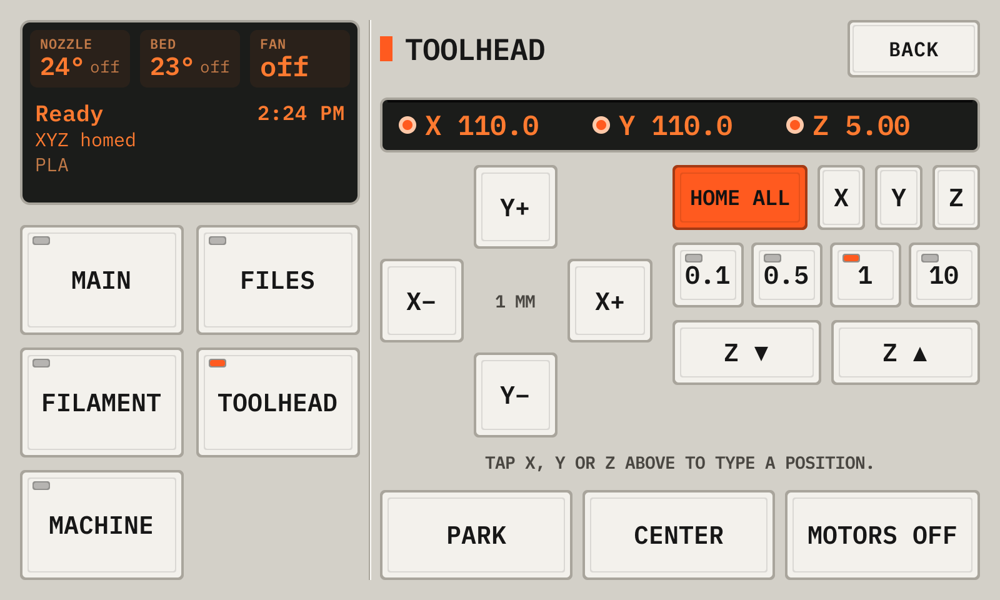
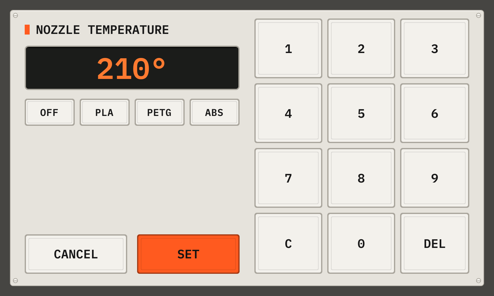

The deck UI · wide
Move and heat
15Move the head and heat
- Open Toolhead, and tap Home all after each start of the printer.
- Hold the joystick to move the head. Use Z for the height.
- Tap a temperature on the idle screen to set it with the keypad.
The Toolhead page

- 1PositionA lit LED shows a homed axis.
- 2HomeHome after each start of the printer.
- 3X+The arrow keys move the head in X and Y by the step. Hold a key to keep moving.
- 4Z upZ ▲ and Z ▼ move Z by the step.
- 5StepsThe step of the arrow keys: 0.1, 0.5, 1 or 10 mm.
- 6Park, Center, Motors offPark lifts the nozzle 10 mm and moves the head to the back left. Center moves it to the bed center. Motors off frees the head.
The keypad of a temperature

- 1ValueThe value.
- 2PresetsOff, and the material temperatures.
- 3KeysC clears, DEL removes a digit.
- 4SetSets the heater.
From the manual for a wide display. The deck draws every picture.